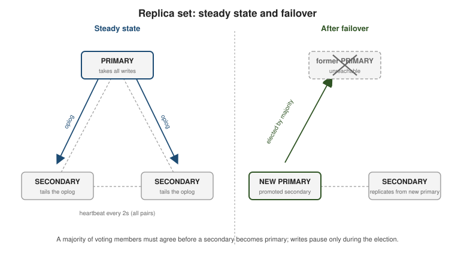

Replica sets & high availability
|
This section documents the current MongoDB 8.x server line as published at the MongoDB Server Manual, which is the reference these pages are written and verified against. No specific patch version is pinned. Some capabilities (Atlas Search, Atlas Vector Search, and parts of encryption and backup) are Atlas-only — they are linked, not documented in depth. This content was generated with the assistance of AI and should be verified against the official manual before being relied on in production, since MongoDB iterates quickly. MongoDB: The Definitive Guide, 3rd ed. (Shannon Bradshaw, Eoin Brazil, Kristina Chodorow, O’Reilly, 2019) is listed in this section’s bibliography and was consulted while preparing these pages. It is not the primary or main reference for the section, and it predates the current server line — it targets roughly MongoDB 4.0 / 4.2 — so on any discrepancy the official documentation at mongodb.com/docs/manual wins, and the difference is noted. |
A replica set is a group of mongod processes that hold the same data. One member is the primary and
takes every write; the others are secondaries that copy the primary’s changes and can step up if it fails.
This page covers how replication works, how a new primary is chosen, and the client-side knobs — read
preference, write concern, read concern — that decide which trade-off between latency, freshness, and
durability a given operation makes.
The replica set and the oplog
Every write the primary applies is also recorded, in an idempotent form, in the oplog (oplog.rs in the
local database) — a capped collection with a fixed size ceiling that discards its oldest entries once full.
Each secondary opens a tailable cursor on the primary’s oplog, copies new entries as they appear, and replays
them against its own copy of the data. Because oplog entries are idempotent, replaying one twice produces the
same result, which is what makes retryable writes and crash recovery safe.

A brand-new member with no data first performs an initial sync: it copies every database from a source member, records where in the oplog that copy started, then applies every oplog entry produced since to catch up. From then on it just tails the oplog like any other secondary.
See Replication for the overview and
Replica Set Oplog for oplog sizing and the
replSetResizeOplog command.
// https://www.mongodb.com/docs/manual/reference/method/rs.printReplicationInfo/
rs.printReplicationInfo() // oplog size and the time span it currently covers
rs.printSecondaryReplicationInfo() // how far behind each secondary isElections and heartbeats
Every member sends a heartbeat to every other member every two seconds. When enough heartbeats to the primary go unanswered (default 10 seconds), the secondaries call an election. A candidate becomes primary only if it receives votes from a majority of the voting members of the configured set — so a three-member set tolerates one member down, and a five-member set tolerates two. Without a majority reachable, the set has no primary and rejects writes.
Members carry per-member settings in the replica set config:
-
priority— a float; a higher value makes a member more preferred as primary.priority: 0means the member can never become primary (but still votes and replicates). -
votes—0or1. A member withvotes: 0does not participate in elections. At most seven members may vote. -
hidden: true— the member is invisible to client read preference and drivers; useful for a dedicated analytics or backup node. Impliespriority: 0. -
secondaryDelaySecs— the member applies oplog entries only after that many seconds have passed, giving a rolling "point-in-time" copy that lags on purpose. Implieshidden: trueandpriority: 0.
// https://www.mongodb.com/docs/manual/tutorial/configure-secondary-only-replica-set-member/
const cfg = rs.conf();
cfg.members[2].priority = 0;
cfg.members[2].hidden = true;
cfg.members[2].secondaryDelaySecs = 3600; // one-hour delayed copy
rs.reconfig(cfg);An arbiter is a voting member that holds no data. It exists only to break ties in a set with an even number
of data-bearing members. Prefer adding a real data-bearing secondary instead: an arbiter cannot acknowledge
w: "majority" writes, so with one data-bearing secondary down, a set of primary + secondary + arbiter
cannot satisfy majority write concern and can also expose the cache-pressure "flow control" problem. See
Replica Set Arbiter for the caveats.
Rollback
If a former primary accepted writes that never replicated to a majority, then crashed and rejoined after a
new primary was elected, those un-replicated writes are not on the new primary’s oplog. On rejoining, the old
primary rolls them back: it reverts to the last common oplog point and writes the reverted documents to
rollback files (BSON, under the data directory) for manual recovery. Writing with w: "majority" avoids this
by ensuring an acknowledged write is already on a majority before the client sees success. See
Replica Set Rollbacks.
Read preference
Read preference tells the driver which members a read may target. It does not change consistency guarantees on the primary; it trades freshness and latency.
| Mode | Behavior |
|---|---|
|
Default. All reads go to the primary; an error if there is no primary. |
|
Primary if available, otherwise a secondary. |
|
Reads only from secondaries; an error if none are eligible. |
|
A secondary if any is eligible, otherwise the primary. |
|
The member with the lowest network latency, primary or secondary. |
Any non-primary mode can return stale data, because a secondary may lag the primary. maxStalenessSeconds
(minimum 90) tells the driver to skip secondaries estimated to be further behind than that. Tag sets filter
eligible members by arbitrary key/value tags in the config (for example { region: "eu", disk: "ssd" }), so a
read can be pinned to a data center.
// https://www.mongodb.com/docs/manual/core/read-preference/
db.events.find({ userId: 42 }).readPref(
"secondaryPreferred",
[ { region: "eu" }, {} ], // prefer an eu-tagged member, fall back to any
120 // maxStalenessSeconds
)
// or per connection:
// mongodb://h1,h2,h3/app?replicaSet=rs0&readPreference=nearest&maxStalenessSeconds=120Write concern, read concern, causal consistency
Write concern { w, j, wtimeout } decides how many members must acknowledge a write before the driver
returns (introduced in Inserting data & write
concern). For a replica set the important values are:
-
w: "majority"— a majority of data-bearing voting members have applied the write; it will survive any single failover. This is the default. -
w: <number>— an explicit count of acknowledgements. -
w: "<name>"— a custom write concern defined undersettings.getLastErrorModesin the config, built from member tags (for example "one node in each of two data centers"). -
wtimeout— a millisecond cap on waiting forw; on expiry the client gets an error even though the write may still commit later.
// https://www.mongodb.com/docs/manual/reference/write-concern/
// define a custom write concern named "multiDC" from tags, then use it
const cfg = rs.conf();
cfg.settings = cfg.settings || {};
cfg.settings.getLastErrorModes = { multiDC: { dc: 2 } }; // members tagged dc, in 2 distinct values
rs.reconfig(cfg);
db.orders.insertOne({ _id: 1, total: 10 }, { writeConcern: { w: "multiDC", wtimeout: 5000 } })Read concern decides how consistent and durable the data a read returns must be:
| Level | Meaning |
|---|---|
|
Whatever the queried member has, no durability guarantee. Default on the primary for most reads. |
|
Like |
|
Only data that a majority of members have acknowledged, so it cannot be rolled back. |
|
On the primary only: reflects every write acknowledged with |
|
A single consistent snapshot across the whole read; used with multi-document transactions. |
// https://www.mongodb.com/docs/manual/reference/read-concern/
db.accounts.find({ _id: "a-1" }).readConcern("majority")Causal consistency is scoped to a session. Inside a causally consistent session the server guarantees "read your writes", "monotonic reads", and "monotonic writes" even when reads are served by different secondaries, by passing operation timestamps between calls.
// https://www.mongodb.com/docs/manual/core/read-isolation-consistency-recency/#causal-consistency
const s = db.getMongo().startSession({ causalConsistency: true });
const coll = s.getDatabase("app").tickets;
coll.updateOne({ _id: 7 }, { $set: { status: "closed" } }, { writeConcern: { w: "majority" } });
coll.find({ _id: 7 }).readConcern("majority").toArray(); // sees the update even on a secondary
s.endSession();Configuring and connecting to a set
Start each mongod with the same --replSetName, then initiate the set once from any member and add the
rest.
// https://www.mongodb.com/docs/manual/tutorial/deploy-replica-set/
rs.initiate({
_id: "rs0",
members: [
{ _id: 0, host: "h1:27017", priority: 2 },
{ _id: 1, host: "h2:27017" },
{ _id: 2, host: "h3:27017" }
]
})
rs.add({ host: "h4:27017", priority: 0, votes: 0 }) // non-voting analytics node
rs.addArb("h5:27017") // discouraged; prefer a data node
const cfg = rs.conf();
cfg.members[1].tags = { region: "eu" };
rs.reconfig(cfg, { force: false })
rs.status() // member states, election metadata, replication lag, oplog windowApplications connect with a replica-set connection string that lists seed members and replicaSet=; the
driver discovers the full membership and the current primary from any reachable seed, and re-discovers after a
failover automatically.
mongodb://h1:27017,h2:27017,h3:27017/app?replicaSet=rs0&w=majority&readPreference=primaryPreferred&retryWrites=trueDriver-specific URI options and pooling behavior are covered in Drivers & tooling. For scaling writes across many primaries rather than replicating one, see Horizontal scaling with sharded clusters.